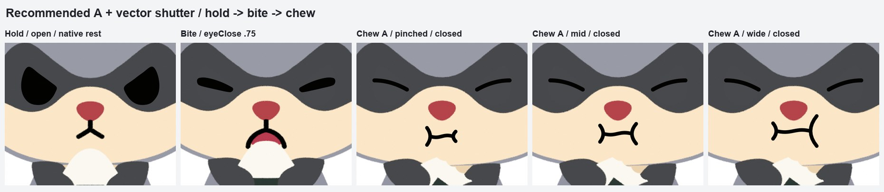
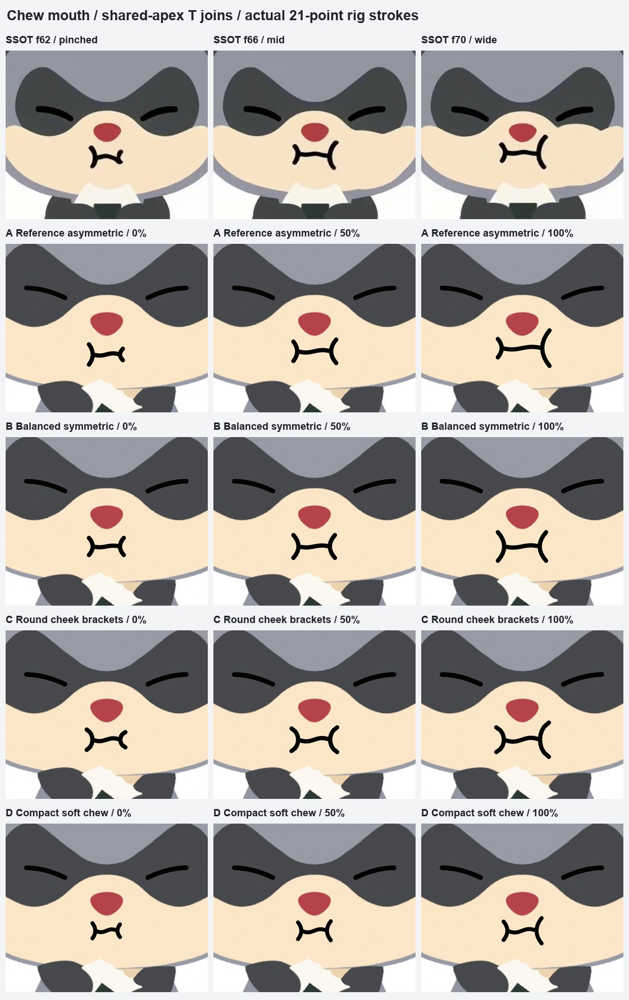
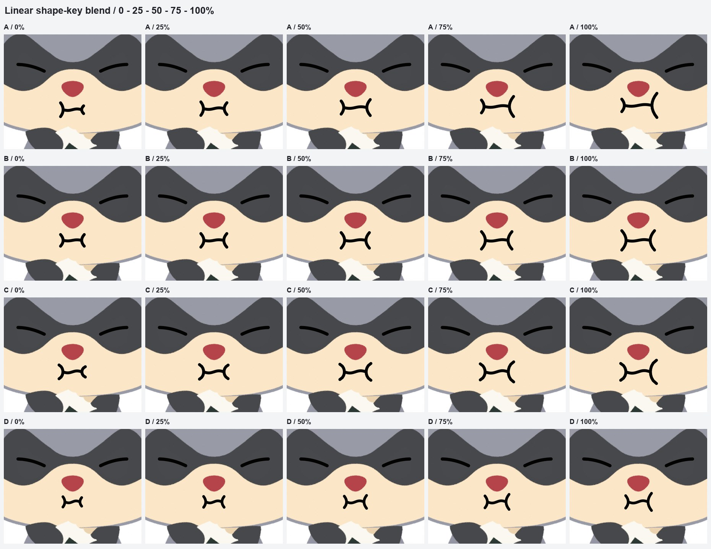
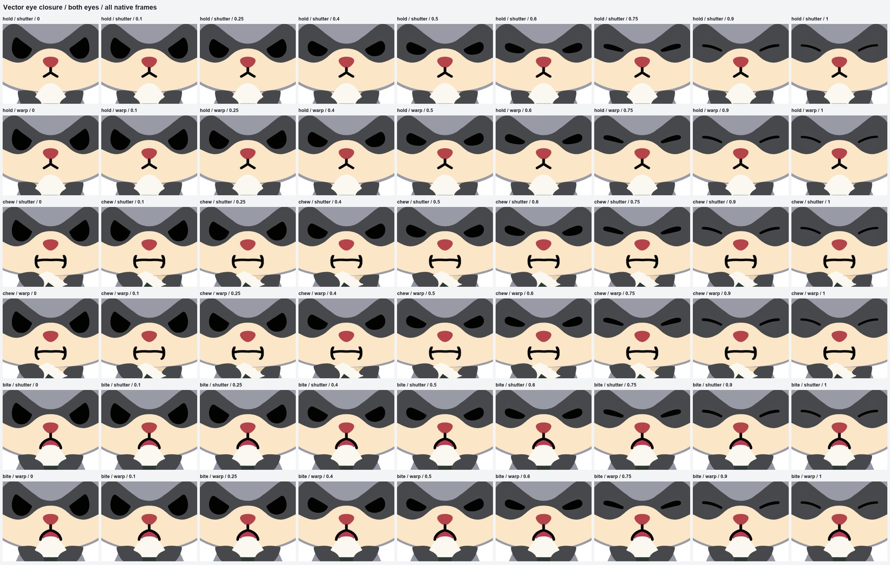
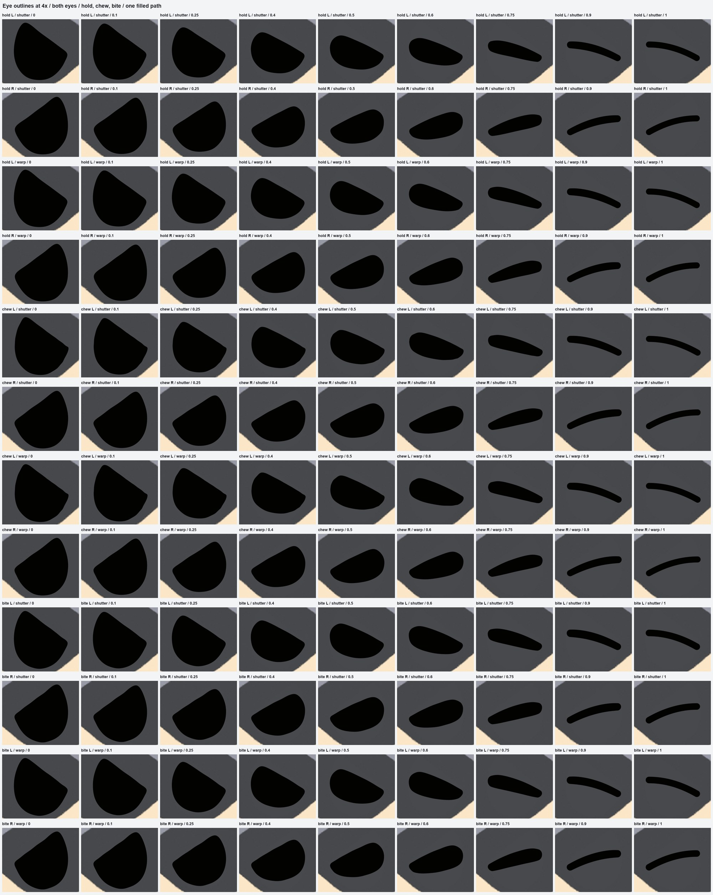

2026-09-30。デザイン：GPT-6 Astra（口も目もすべて数式の曲線で作図）。まだ画像だけで、リグ・モーションには入れていません。
構え（目は開いたまま）→ かじる瞬間（目が閉じかけ）→ 噛む（すぼむ／中／開く、目は閉じたまま）

1段目が SSOT（元動画）。横線の端は括弧の曲線の上にぴったり乗せ、線の太さは一定、端は丸めてあります。

噛むあいだの途中の形（すぼむ⇔開く の補間。実機ではこの補間で動きます）

開き具合 0 → 1。上の段が「シャッター」（まぶたが上から先に下りる、おすすめ）、下の段が「ワープ」（目の形ごと押しつぶす）。どちらも最後は同じ弧の線になります。

4倍拡大（左右の目、途中の形がすべて角のない1つの形になっていることの確認）
